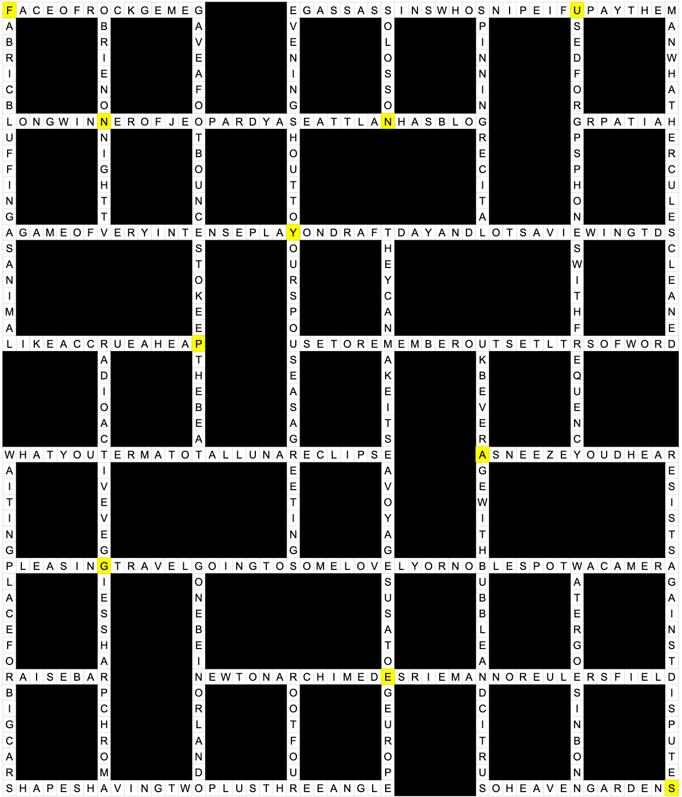

Solution: A Crossword
Answer: FUNNY PAGES
Written by Jakob Weisblat and Yannick Yao
This is a diagramless crossword puzzle, though there aren't that many clues for a 15x15 grid; it turns out to be a cryptic-style grid, where every square in an even row and column is black (one potential clue to this is that every answer has odd length). Whenever two numbers for the same clue are given, across always comes before down.
| Clue | Answer |
|---|---|
| 1. Face of rock gem, e.g. | FACET |
| 1. Fabric bluffing as animal | FAKE FUR |
| 2. O’Brien on night TV | CONAN |
| 3. Gave a foot bounces to keep the beat | TOETAPPED |
| 4. E.g. assassins who snipe if u pay them | HIRED GUNS |
| 4. Evening shout to your spouse as a “greetings” | HONEY I’M HOME |
| 5. Solo’s son | REN |
| 6. Spinning recital? | DJ SET |
| 7. Used for GPS & phones, with “frequency” | ULTRAHIGH |
| 8. Man, what Hercules cleaned! | STABLES |
| 9. Long winner of Jeopardy!: a Seattlan (has blog). | KEN JENNINGS |
| 10. Grp. at IAH | TSA |
| 11. A game of very intense play on draft day, and lotsa viewing TDs | FANTASY FOOTBALL |
| 12. They can make it! Sea voyages, USA to e.g. Europe | OCEAN LINERS |
| 13. Like, accrue a heap | RUNUP |
| 14. Radioactive veggies’ sharp chroma | NEON GREEN |
| 15. Use to remember outset ltrs. of word | MNEMONICS |
| 16. U.K. beverage with bubble and citrus | ORANGEADE |
| 17. What you term a total lunar eclipse | BLOOD MOON |
| 17. Waiting place for big cars | BUS STOP |
| 18. A sneeze you’d hear | ACHOO |
| 19. Resists against; disputes | OPPOSES |
| 20. Pleasing travel - going to some lovely or noble spot w/ a camera | SIGHTSEEING TRIP |
| 21. Go NE & be in Orlando | TAMPA |
| 22. Water goes in Bonn | RHINE |
| 23. Raise ___ bar | THE |
| 24. Newton, Archimedes, Riemann or Euler’s field | MATHEMATICS |
| 25. Root four | TWO |
| 26. Shapes having two plus three angle | PENTAGONS |
| 27. So, heaven gardens! | EDENS |
While solving the clues, solvers may notice that some of them are strangely phrased or even downright ungrammatical. Clearly, they weren’t the best possible clues we could write for these answers. Solvers may also notice that some of the clues are very long, and that the very long clues correspond to the longest answers. In fact, each clue can be placed in a larger grid in the same locations as their corresponding answers:
Taking the places where this grid overlaps with the answer grid, we get the squares highlighted in yellow. Reading those in row major order, we get the answer, FUNNY PAGES.
Author’s Notes
The inspiration for this puzzle came from an unlikely place - imagining if a crossword grid were made of the same material as a diaper and could expand if water were added. That's what inspired the first few titles of this puzzle, but nobody understood any of them so we changed it to this.
We initially planned to improve the clues after the first round of testing (if u pay them, two plus three angle, etc.) but we ended up keeping them since we thought they were funny and the first set of testsolvers thought their ridiculousness made them a clear target of further observation.
Our favorite clues are 1-Down, 4-Across, 9-Across, and 23-Down.
We're sorry about the entry DJ SET, which was harder than expected - we intended to change the clue but then there were more fires to put out, and it wasn't vital to extraction. We hope it didn't trip you up too much.